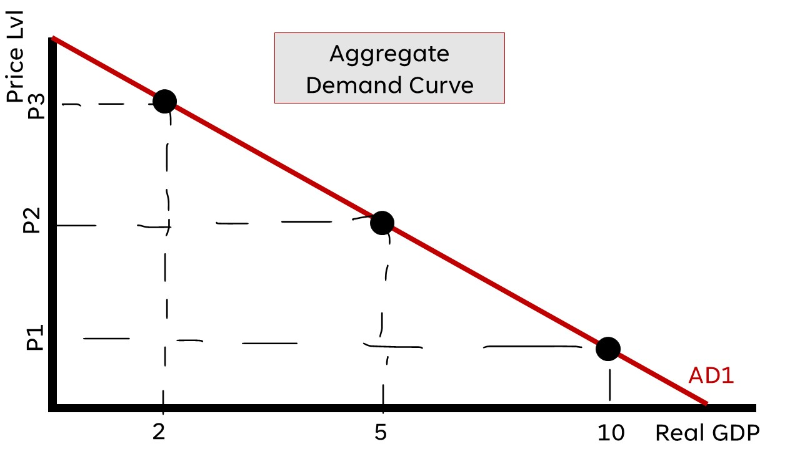
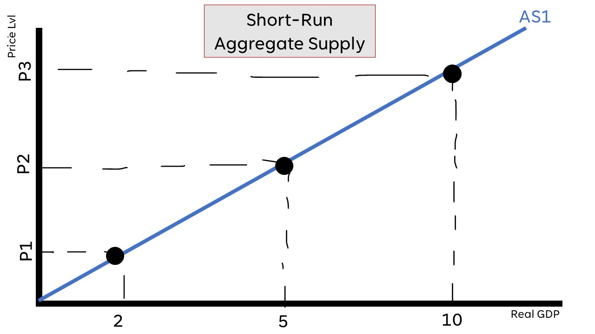
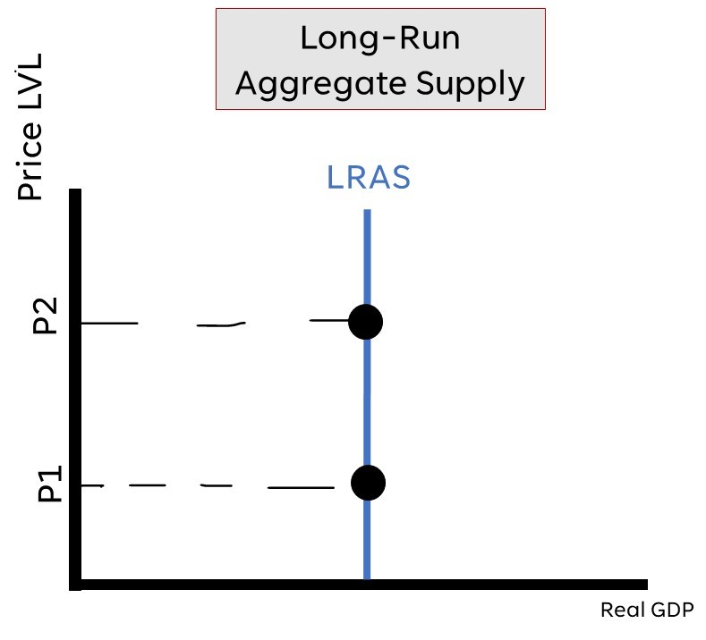

Aggregate Demand (AD)
Why downward sloping?
- Real Balances Effect: Higher prices are correlated with lower purchasing power (and vice-versa); importantly, purchasing power mirrors consumption
- Interest Rate Effect: Prices and interest rates mirror each other; higher prices -> higher interest rates -> less investment spending
- Foreign Trade Effect: Higher domestic prices motivates people importing cheaper goods from other countries instead
Aggregate demand and RGDP are synonymous. Therefore, the shifters of AD are the same as changes in the
components of RGDP
Spending and Tax Multipliers
Multiplier Effect: idea that an initial change in spending sets of a chain reaction of spending in an
economy
Marginal Propensity to Consume (MPC): the proportion of money earned that is used for spending
Marginal Propensity to Save (MPS): the proportion of money earned that is used for saving
Spending Multiplier: number used to how much spending will increase based on an initial spending;
1/MPS
Tax Multiplier: the change in economy spending when the govt. changes taxes; -MPC/MPS
Short-Run Aggregate Supply (SRAS)
Why upward sloping?
Wages and resource prices are not flexible in the short-run!!!
Shifters
Resource prices/Availability
Actions of the Government (ex. taxes, subsidies, domestic regulations)
Productivity/Technology
Long-Run Aggregate Supply (LRAS)
Shifters are changes in...
- the number of resources (a factor of production)
- the quality of resources (a factor of production)
- technology and productivity
- government policy
Changes in Equilibrium (SRAS)
Changes in AD or LRAS curve changes the short-run equilibrium
Positive Supply Shock (Creates Inflationary Gap)

Example: Corporate Taxes reduced
In the long run, SRAS2 will return back to SRAS1
Negative Supply Shock (Recessionary Inflationary Gap)

Example: British Government increases tariffs on imported input
In the long run, SRAS2 will return back to SRAS1
Changes in Equilibrium (AD)
The AD curve shifts based on the determinants of RGDP (consumer, investment, gvt. spending and net exports)
Positive Supply Shock (Creates Inflationary Gap)

Example: French imports become more expensive
In the long run, SRAS1 will shift left to return economy to long-run equilibrium
Negative Supply Shock (Recessionary Inflationary Gap)

Example: U.S.S consumer income decreases
In the long run, SRAS1 will shift right to return economy to long-run equilibrium
The AD curve shifts based on the determinants of RGDP (consumer, investment, gvt. spending and net exports)
Changes in AD or LRAS curve changes the short-run equilibrium
Long-Run Self-Adjustment

In the long-run, the economy ALWAYS returns to long-run equilibrium
Fiscal Policy
Fiscal policies are congress-driven actions taken to control the
economy
Fiscal policy can be expansionary or contractionary
- Expansionary: increasing the RGDP to lower unemployment (lowering taxes, increased GVT spending)
- Contractionary: decreasing the RGDP to lower inflation (increasing taxes, decreased GVT spending)
Fiscal policy can also be discretionary or non-discretionary too
- Discretionary: on purpose (ex. Congress creating legislature to control spending/taxation)
- Non-discretionary: automatic (ex. taxation laws already implemented)
Non-discretionary fiscal policy involves automatic stabilizers that trigger automatically